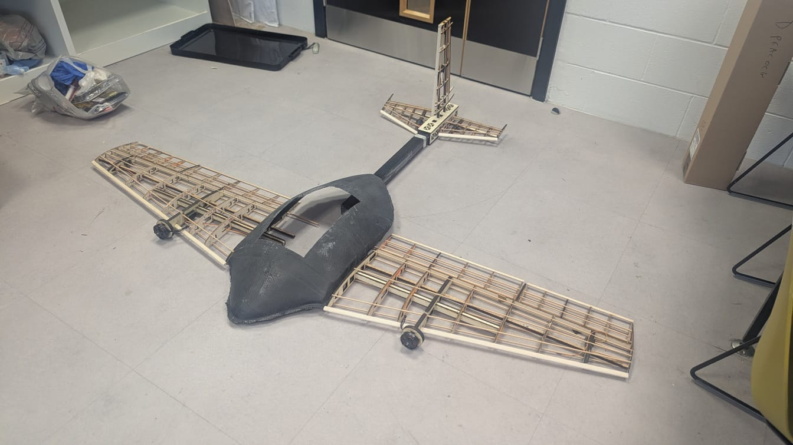

Hands-on fabrication · Team project
UAS Challenge airframe manufacturing
I worked on the manufacturing side of our UAS Challenge aircraft, as well as structural analysis of the horizontal tail.

What I did
- I prepared the cutting files in LightBurn and laser-cut the wooden airframe parts using a Trotec laser cutter.
- I helped assemble and bond the cut parts together using adhesives and workshop tools.
- I worked on the carbon-fibre layup for the fuselage, then used a Dremel to trim the cured material.
- I used rotary sanding discs to smooth and finish the wooden parts before assembly.
- I carried out static and modal FEA on a horizontal-tail component using a 300 Pa distributed load.
Photos from the workshop
These photos show the carbon-fibre fuselage section and the wing framework while we were building the aircraft.


What I enjoyed about it
I enjoyed this project because I got to spend time in the workshop actually making parts and putting them together. It was also a good reminder that something looking right in CAD doesn't mean it'll fit perfectly the first time.